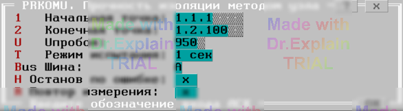

3.4 Прочность изоляции коммутатора методом узла (PRKOMU)
Тест позволяет проверить прочность изоляции коммутатора переменным напряжением от 30 В до 950 (1500) В методом полного узла.
Сначала появляется меню (см. рисунок 1):

Параметры
- Начальная точка — адрес первой проверяемой точки;
- Конечная точка — адрес последней проверяемой точки (для одной точки оба адреса должны совпадать);
- Uпробоя, В — задаваемое пробойное напряжение;
- Режим испытания — «1 сек» или «1 мин»;
- Шина — общая шина («A» или «B») для подключения всех точек.
Алгоритм проверки
Подготовка
- Включить питание ППУ.
- Установить режим ППУ и контролировать напряжение вольтметром.
- Подключить все проверяемые точки к выбранной «общей» шине.
- Запустить ППУ и проверить отсутствие связи между шинами A1 и B1. При замыкании выводится «Замыкание шин A1 и B1» и тест прерывается.
Проверка каждой точки
Для каждой точки в диапазоне выполняются шаги:
- Подключить эту точку к альтернативной шине;
- Запустить ППУ и проверить отсутствие связи. При наличии «Пробой» выводится «АДРЕС Пробой»;
- Подключить точку обратно к общей шине.
После проверки всех точек появляется итоговое меню (см. п. 6.3).